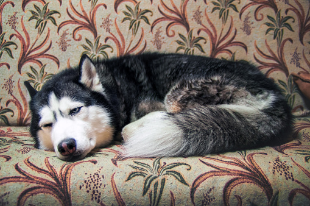

Pets
Bacon Q

Bacon Q. Dog is a 9yr old labradoodle. He prefers to spend his days lounging among the three different beds/couches that his family has gifted him. He enjoys a walk or two around the neighborhood, as long as he can pretend that he doesn't see any of the other animals to avoid the embarrassment of not wanting to admit he has no wolf-like skills in chasing them.
At night just as the rest of the family is ready to relax, Bacon suddenly wants to release all of his energy. He will place his toys on a mini couch and frantically drag the couch around, giving his toys "a ride." There is also a lot of rolling. Lots and lots of rolling.
Photo Gallery


Likes
- Belly rubs
- Playing tug-of-war
- Sneaking onto the couch
Momo

Momo is a Siamese cat. He prefers to spend his days eating and sleeping. Momo loves to lounge in boxes.
At night, he likes to accompany his owner by making bread and breathing loudly on the owner's face. Momo is an amazing baker.
Photo Gallery


Likes
- playing with his fish toy
- sleeping on the couch
- eating food
Maple

Maple is a 2 year old tabby cat with brown stripes. She is very playful and friendly but also loves lounging in the sun! Maple is a huge fan of treats - she has even learned how to open doors to steal some extra treats.
Sometimes Maple has boundless energy. At night, she gets the zoomies after eating her final meal of the day. It usually takes her another hour to settle down before she can take a long nap.
Photo Gallery


Likes
- belly rubs
- treats
- stretching her paws
Luna

Luna is a husky. She loves getting pets and eating treats. She is friendly and has an outgoing demeanor. Luna loves playing outside in the snow and in the dog park.
Luna dislikes visiting the vet.
Photo Gallery


Likes
- playing with her toys
- sleeping on the couch
- getting treats
Van Gogh

Van Gogh is a three year old cat of mixed ragdoll and domestic shorthair breed. He was adopted when he was 7 months old. Van Gogh has been a people cat since he was young. He craves attention but needs alone time when he wants it. He is purely a masterpiece when his sapphire eyes staring at his human friends. He loves birds, rats, insects, and water from human mug..
Van Gogh is responsible for his household safety. But he gets scared when the vacuum machine wakes up. He tries his best to make defense but his beautiful fur coat gets messed up immediately when he gets too close. By the way, he likes his fur coat being brushed by himself. He bites when he does not get enough attention, but he always gets what he wants.
Photo Gallery


Likes
- Biting his human
- Chicken Breast
- His catnip pillow